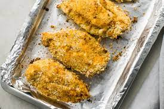

Back
Crispy Chicken

Simple ingredients make a healthy entree that can be paired with vegetables to make a hearty meal that looks so good it will impress others!
Ingredients
- 1 boneless chicken breast
- 2 tablespoons mayo
- Half a cup of Panko bread crumbs
- 2 tablespoon italian seasoning
Steps
- Pre-heat oven to 425 degrees fahrenheit
- Thaw chicken breast and dry with a paper towel
- Cover chicken in thin layer of mayo
- In a bowl, mix panko bread crumbs and italian seasoning together
- Dip chicken breast covered in mayo into bread crumb mixture, coating the chicken with a layer of bread crumbs using the mayo like a glue
- Place chicken on parchment paper on a baking sheet
- Cook for 25 mins, ensuring no pink in middle and juices run clear
- Let cool and serve with BBQ sauce or ketchup!